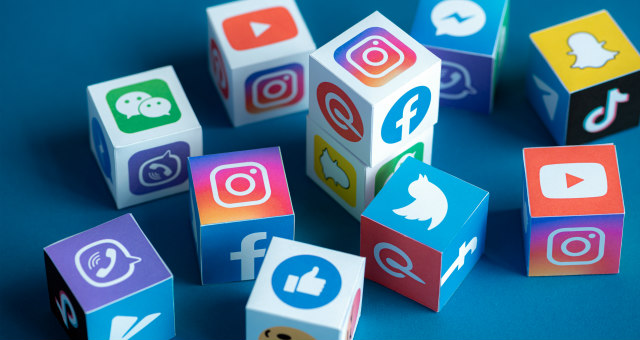

Маркетинг в социальных сетях стал
проще: пошаговое руководство
Не думаю, что мне нужно говорить вам, насколько велики социальные сети.
Социальные сети - это самая быстрорастущая тенденция в мировой истории.

Он даже вырос быстрее, чем сам Интернет.
За первые десять лет публичной доступности Интернет сумел собрать около 1 миллиарда пользователей.
Если вы думаете, что охват почти каждого шестого человека на планете в течение десяти лет - это быстро, то я согласен с вами.
Но как насчет достижения каждого пятого в течение девяти лет?
С момента открытия для всех желающих зарегистрироваться 26 сентября 2006 года Facebook сейчас насчитывает 1,6 миллиарда пользователей.
К настоящему времени население мира выросло до более чем 7,8 миллиарда человек, и почти каждый четвертый человек на этой планете имеет учетную запись в Facebook
Facebook в буквальном смысле начинает захватывать мир. 68% людей в Северной Америке используют платформу, и проценты для аналогичных стран также ошеломляют.
В некотором смысле Facebook - это отдельная страна. Он больше, чем любая другая страна в мире, и можно даже утверждать, что он более связан.
И это всего лишь Facebook. Мы даже не учли пользователей на всех остальных платформах. К концу этого анализа у нас, вероятно, возникнут проблемы со счетом. Но не думайте, что люди используют эти платформы только раз в месяц только потому, что большинство людей измеряют статистику именно так. На самом деле люди используют эти платформы каждый день. диаграмма частоты использования маркетинга в социальных сетях.png сайты маркетинга в социальных сетях Люди проверяют, проверяют и снова проверяют. Фактически, мы настолько зависимы от наших мобильных телефонов и приложений для социальных сетей, что теперь есть слово для обозначения нашей одержимости. Номофобия - это боязнь оказаться рядом с мобильным телефоном. При таком широком использовании социальные сети открывают невероятные маркетинговые возможности. Если вы еще не используете маркетинг в социальных сетях, вам придется либо изучить его сейчас, либо в конечном итоге проиграть. В этом руководстве по маркетингу в социальных сетях я расскажу вам о 12 самых популярных платформах. Я дам вам обзор каждого из них, покажу вам, как построить для них успешную стратегию в социальных сетях, и укажу вам некоторые из лучших мест, где можно узнать еще больше. Ниже приведено содержание, поэтому вы можете быстро перейти к той платформе, которая вас интересует больше всего. Определения руководства по маркетингу в социальных сетях Как обычно, Википедия разочаровывает в попытках дать определение маркетингу в социальных сетях. Он просто говорит : «Маркетинг в социальных сетях - это процесс привлечения трафика или внимания через сайты социальных сетей». Вау, кто бы мог подумать, правда? Я бы сам хотел попробовать себя в определении маркетинга в социальных сетях: Маркетинг в социальных сетях - это процесс создания контента, который вы адаптировали к контексту каждой отдельной платформы социальных сетей, чтобы стимулировать взаимодействие пользователей и их совместное использование. Вы получаете трафик - это только результат маркетинга в социальных сетях. Что вы делаете, чтобы получить такой результат? Создавайте контент, который хорошо работает на каждой платформе. Однако, естественно, каждая платформа отличается. С одной стороны, содержание блога - хозяин. С другой стороны, видео доминирует. И с другой стороны, фотографии побеждают. Вот почему я собираюсь показать вам различия между 12 ведущими платформами и то, как вы можете использовать каждую из них. Как вы увидите, каждая платформа требует немного разной стратегии. Дело в том, что все хотят, чтобы их контент стал вирусным. Но для этого контент должен быть интересным, чтобы люди хотели им поделиться. Ваш контент должен быть настолько хорош, чтобы у пользователя возникало желание рассказать о нем всем своим друзьям. В противном случае ваша стратегия в социальных сетях потерпит неудачу. У вас не будет репостов, вирусного контента и обратного трафика на ваш сайт. Обзор маркетинга в социальных сетях Даже если вы все время слышите об одних и тех же социальных сетях, это не значит, что других нет. В одной только Википедии их более 200. Эта великолепная графика под названием « Разговорная призма » дает хороший обзор. рынок социальных сетей Хотя этот список достаточно актуален, вы можете удивиться, что он полностью отличается от первой версии этого рисунка 2008 года. Все версии объединяют около 200 сервисов, но от версии к версии (которые они обычно обновляют каждые 2-3 года) создатели удаляют более 100 платформ социальных сетей и добавляют еще 100. Мир социальных сетей меняется невероятно быстро. Поэтому, когда вы только начинаете, начните с тех, которые существуют уже много лет. Если вы правы, ставки на «следующий большой шаг» могут окупиться. Но если вы только начинаете работу над стратегией в социальных сетях, вы не можете позволить себе не иметь страницы Facebook или учетной записи Twitter, поскольку мы уже видели, насколько они эффективны. Давайте посмотрим на некоторые ключевые термины в социальных сетях. Содержание Контент - это то, что вы публикуете. Это может быть обновление статуса в Facebook, фотография в Instagram, твит, что-то, что можно закрепить на доске в Pinterest и так далее. Графика уже показала вам, что контент бывает разных форм и что вам нужно адаптировать его для каждой платформы. Но что еще важнее содержания, так это контекст. Контекст Гари Вайнерчук сказал, что если контент - это король, то контекст - это бог . У вас может быть отличная шутка, но если вы поместите ее где-нибудь в сообщении в блоге на 3000 слов, очень немногие люди ее увидят. Однако в Твиттере такая же шутка, как твит, может подавить его. Верно и обратное. Упаковать весь пост в блоге в один твит вряд ли возможно, поэтому попробуйте вместо этого хороший призыв к действию с соответствующими хэштегами. И это подводит нас к хэштегам. Хештеги К настоящему времени это очень распространенная форма, которую люди используют для добавления метаинформации почти во все каналы социальных сетей. Twitter, Facebook, Instagram и Pinterest используют хэштеги, чтобы вы могли описать тему вашего контента или отметить ее как часть текущих тенденций. Они делают ваш контент более доступным для пользователей и, следовательно, с большей вероятностью поделятся им. Акции Акции - это валюта мира социальных сетей. Акции - это все, что имеет значение в социальных сетях. Люди будут продолжать говорить с вами о показах, рейтингах кликов и потенциальном охвате. Но ничто из этого не говорит вам, действительно ли люди передают то, что вы хотите сказать. Когда люди взаимодействуют с вашим контентом, это хорошо. Но когда они делятся этим, это время, когда вы празднуете. BuzzSumo - отличный инструмент для измерения репостов и общего воздействия контента : определение акций маркетинга в социальных сетях Чем больше репостов, тем больше людей любят ваш контент. Это лучшая форма взаимодействия, которую могут иметь люди. Помолвка Это общий термин, означающий, что люди взаимодействуют с создаваемым вами контентом. Это может быть лайк, реакция, комментарий или репост. Все это хорошо, но акции там, где есть. Теперь, когда мы рассмотрели некоторые определения, давайте взглянем на некоторые тенденции маркетинга в социальных сетях. Тенденции маркетинга в социальных сетях Мир социальных сетей меняется быстрее, чем любое другое онлайн-пространство. И не отставать от этого - непростая задача. Итак, вот несколько тенденций, о которых вам стоит помнить. Скорее всего, эти тенденции повлияют не только на этот год, но и на будущие годы. Вот какие они есть. Органический охват падает Когда-то пользователь социальных сетей мог публиковать интересный контент и легко увеличивать количество подписчиков в социальных сетях. Через несколько месяцев они получали множество запросов на добавление в друзья, комментариев, репостов и «лайков» - все из-за их потрясающего контента. Но сегодня это не так. Фактически, большинство платформ социальных сетей все больше затрудняют создание органических подписчиков. И это не случайно. Вот почему. По мере того, как способность органических суперзвезд сиять снижается, растет что-то еще. Как вы уже догадались: расходы на рекламу. руководство по маркетингу в социальных сетях органический охват снижается Фактически, одно изменение, сделанное Facebook, привело к падению органического охвата на публикацию на 52% всего за несколько месяцев. Органическая выпадающая диаграмма маркетинга в социальных сетях из социального потока Помните: платформы социальных сетей - это бизнес. Facebook, Instagram, Twitter и все остальные социальные сети хотят зарабатывать деньги. И они делают это, связывая вас с платежеспособными клиентами. В идеале они делают это хорошо. Но в конечном итоге каждый из них занимается этим ради денег. Так что вам нужно следить и измерять свои собственные усилия, чтобы увидеть, что работает, а что нет. Социальные сети становятся "платными за игру" Поскольку органический охват становится все труднее, предприятиям приходится платить, чтобы играть. Они больше не могут доверять смекалистым усилиям по контент-маркетингу для создания подписчиков. Чем больше алгоритмы социальных сетей отдают предпочтение рекламе, тем больше компании готовы платить. Вот почему расходы на рекламу в социальных сетях стремительно растут. Рекламные бюджеты в социальных сетях с 2014 по 2016 годы увеличились вдвое . К 2018 году он составил более 89 миллиардов долларов. На самом деле это не очень удивительно. Это имеет смысл, когда вы узнаете, что компании, работающие в социальных сетях, зарабатывают практически все свои деньги на рекламе. рассылка по электронной почте для маркетинга в социальных сетях Другими словами, социальные сети бесплатны только для пользователей, потому что рекламодатели платят кучу денег, чтобы привлечь этих пользователей. Пользователь - это продукт. Но чтобы добраться до них, нужно заплатить. К счастью, если вы выберете для своего бизнеса подходящую платформу социальных сетей, в которую будете вкладывать деньги, это не будет большой проблемой. Большинство социальных сетей по-прежнему имеют очень разумные расходы на рекламу, особенно если вы хорошо продумали свои рекламные объявления. В конце концов, чем лучше ваша реклама, тем меньше вы потратите. Каналы объединяются По мере того, как предприниматели создают веб-сайты в социальных сетях, возможности становятся все более безграничными. И эта тенденция не замедляется. По мере развития новых способов общения, привлечения клиентов и привлечения потенциальных клиентов развиваются и стратегии, которые также являются новаторскими. Возьмем, к примеру, электронные письма о брошенных корзинах. Когда-то единственным местом для отправки и получения сообщений об отказе от корзины была электронная почта. Вы получите что-то подобное в своем почтовом ящике. Однако теперь Facebook Messenger и ряд других платформ обмена сообщениями в равной степени жизнеспособны. Буквально на днях я получил это сообщение от Pura Vida Bracelets в Facebook Messenger. Итак, в чем смысл всего этого? Каналы меняются, и способы их использования маркетологами еще больше меняются. По мере того, как все больше и больше социальных сетей находят свою основу, ожидайте, что слияние различных маркетинговых каналов произойдет еще больше, чем это уже произошло. Инструменты объединяются Но сливаются не только каналы. Инструменты социальных сетей, которые мы используем, также объединяются. Например, сколько раз на этой неделе вы входили в продукт SaaS с помощью Google или Facebook вместо создания новых учетных данных? По мере того как все больше инструментов наводняется в Интернете, все они становятся беспорядочными для пользователей этих инструментов. К счастью, маркетинговые инструменты в Интернете работают над тем, чтобы легко интегрироваться с гигантами рекламы. Возьмем, к примеру, MailChimp. С помощью MailChimp, программного обеспечения для электронного маркетинга, пользователи могут создавать рекламу в Facebook прямо из своих учетных записей MailChimp. Они могут сделать это, чтобы настроить таргетинг на своих подписчиков электронной почты или создать похожую аудиторию из своих текущих подписчиков. Чем чаще это происходит между платформами социальных сетей и SaaS-компаниями, тем легче у вас будет маркетинг для вашей целевой аудитории. Действительно, это слияние онлайн-инструментов - хорошая вещь для вашего бизнеса. И, скорее всего, в ближайшее время он не замедлится. Помня об этих тенденциях, пришло время взглянуть на самые популярные платформы (и некоторые из них, которые только появляются). Для каждой платформы я дам вам краткую историю того, как она возникла, где она находится сейчас, что диктует контекст платформы и как создать для нее отличный контент. Начнем с самого большого зверя: Facebook. Facebook - Маркетинг в социальных сетях История: Как подсказывает название фильма, это социальная сеть. Когда Марк Цукерберг и его соучредители создали сайт в комнате общежития Бостона в 2004 году, они сделали его доступным только для студентов Гарварда . Но они быстро осознали потенциал сайта. После расширения до колледжей Ivy League и нескольких других, они открыли Facebook для всех в 2006 году. И он полностью взорвался Теперь это самая большая платформа для социальных сетей. Он предлагает маркетологам больше всего данных и наиболее таргетированную рекламу. Вы можете быть настолько конкретны, как определить своего клиента вплоть до носков, которые он носит. С помощью Facebook Ads вы можете настроить таргетинг на руководителей управленческого звена в районе залива в возрасте от 45 до 54 лет, которые регулярно играют в гольф и регулярно тратят деньги на оборудование (благодаря данным кредитной карты). Контекст: Facebook дает вам большую свободу, когда дело касается контента. Изображения, видео и текстовые сообщения работают. Однако важно то, чтобы вы максимально интегрировали свой контент в платформу. Например, вместо того, чтобы просто размещать ссылку на видео YouTube, вы можете загрузить видео на собственную платформу Facebook. Вы также можете выходить в эфир, делиться «историями» и даже делать покупки на Facebook Marketplace. Постарайтесь удержать пользователя на платформе как можно дольше. Люди доверяют Facebook и не хотят покидать комфорт «своего дома». Facebook Business Manager (теперь называется Facebook Business Suite) Если вы хотите размещать рекламу на Facebook, первое, что вам нужно знать, - это инструмент Facebook Business Suite. Вы можете думать об этом как о хабе для управления вашей рекламой, страницами, почтовыми ящиками и людьми. Это бесплатно и довольно просто в использовании. Перейдите на целевую страницу Facebook Business Suite . Нажмите «Создать учетную запись» в правом верхнем углу. Введите название своей компании и нажмите «Продолжить». Затем введите свое имя и рабочий адрес электронной почты, затем нажмите «Готово». Да, настроить его действительно так просто. Теперь вы увидите панель управления Business Suite. Не стесняйтесь просматривать, чтобы почувствовать его возможности. Этот инструмент абсолютно необходим всем, кто серьезно относится к рекламе и маркетингу на Facebook. Это даст вам единое место для беспокойства о вашей маркетинговой эффективности, вместо того, чтобы переходить от вкладки к вкладке. Варианты рекламы в Facebook Возможно, лучшая часть Facebook - это конкретность, с которой вы можете ориентироваться на своего идеального клиента. Вы можете настроить таргетинг на людей в зависимости от их демографии, устройства, возраста, интересов и множества других характеристик. Это чрезвычайно ценное преимущество для любого маркетолога. В конце концов, мы, маркетологи, тратим массу времени на создание аватаров клиентов и целевых рыночных портфелей. Но Facebook на самом деле позволяет вам претворить эти вещи в жизнь. Первое, что вы должны выбрать при создании рекламной кампании Facebook, - это цель вашей кампании. Вы хотите привлечь трафик на свой веб-сайт, увеличить количество конверсий, продвигать свою страницу в Facebook, привлечь внимание к своему посту или что-то еще? Просто выберите тот, который вам нужен. Затем вы также сможете выбрать свою аудиторию на основе их местоположения, возраста, пола, языка, интересов, поведения и связей. Наконец, вы сможете выбрать устройства, на которые хотите настроить таргетинг, и где вы хотите, чтобы ваша реклама отображалась. Facebook рекомендует использовать автоматическое размещение рекламы, но если вы не согласны, вы можете так же легко решить, куда вы хотите направить свою рекламу и на какое устройство вы хотите, чтобы она была нацелена. Многие социальные сети примут все эти решения за вас. Но Facebook ставит вас на место водителя, потому что они знают, что вы, вероятно, лучше всех найдете своих идеальных клиентов. В конце концов, вы лучше всех знаете свой целевой рынок. Хотите максимально использовать маркетинговые возможности Facebook? Вот краткое изложение того, как доминировать в маркетинге Facebook. Понимание похожих аудиторий Facebook Что произойдет, когда вы найдете идеальную аудиторию для таргетинга? Вы загребаете трафик и ведете как никогда раньше. Буйя. Но должно ли это закончиться на этом? Поиск идеальной рекламной аудитории может занять некоторое время, поэтому, естественно, вы захотите извлечь из нее максимум пользы. К счастью, когда вы найдете свою идеальную аудиторию, вы сможете использовать ее. Facebook позволяет создавать похожие аудитории. По сути, это аудитории, имитирующие характеристики одной из ваших текущих аудиторий. Это означает, что если у вас есть аудитория, которая хорошо работает, вы можете создать аналогичную аудиторию, которая также должна хорошо работать. Рекламодатели повсюду обращаются к этой функции, потому что она упрощает процесс поиска и расширения вашего целевого рынка. Вы не хотите пропустить это. Интеграция с Instagram Знаете ли вы, что когда вы создаете рекламу в Facebook, вы также можете запустить ее в Instagram, нажав одну кнопку? Это правильно. Это не требует от вас дополнительной работы. Вы можете просто нажать кнопку размещения рекламы в Instagram и выбрать «Лента», «Истории» или оба варианта. маркетинг в социальных сетях от facebook до instagram Если ваша реклама очень наглядна и ваш целевой рынок - это молодые люди, то вы можете рассмотреть возможность использования этой автоматической интеграции. Это расширит ваши возможности без дополнительных усилий. Facebook Live Люди любят Facebook вживую. Они не любят это так, как любят свои семьи, но чертовски близки. Некоторое время маркетологи трепетали перед мощью видеомаркетинга . По крайней мере, так было до тех пор, пока не появилось живое видео. В живом видео есть что-то, что делает его более привлекательным. Может быть, это шанс того, что люди облажаются. Может дело в прозрачности. Может быть, это заставляет нас чувствовать себя более связанными. Какими бы ни были причины, факт остается фактом. Людям нравится живое видео гораздо больше, чем традиционное. Это особенно верно в отношении Facebook. Пользователи тратят в три раза больше времени на просмотр прямых трансляций, чем на предварительно записанные. Другими словами, живое видео может стоить вашего маркетингового времени и денег на Facebook. Он быстро привлекает людей, и они смотрят его дольше, чем альтернативный видеоконтент. А поскольку он все еще находится на ранней стадии своего развития, живое видео еще не переполнено. Это означает, что он готов к употреблению. Instagram История: Эти ребята все сделали правильно. У них было идеальное приложение, и они выпустили его в идеальное время. В течение трех месяцев после того, как Instagram появился в магазине приложений, он достиг 1 миллиона пользователей . График роста пользователей Instagram в социальных сетях Их рост был полностью органичным. Приложение было настолько хорошим, что месяцами доминировало в чартах магазинов приложений. И это все еще так. Когда приложение вышло, Apple только что представила iPhone 4. Это привело к значительному скачку вперед в качестве изображений, которые пользователи могли делать на свои смартфоны. Семь лет и миллиард пользователей спустя приложение работает почти так же. Люди публикуют фотографии, отмечают друзей, вставляют хэштеги и дважды нажимают, чтобы показать, что им нравится то, чем делятся другие. Может показаться, что ничего не произошло, но давайте не будем забывать тот факт, что Facebook приобрела Instagram в 2012 году, всего через 24 месяца после их начала, за колоссальный миллиард долларов . А в 2015 году они начали использовать рекламу для всех . Контекст: изображения и видео. Instagram всегда был связан с фотографиями, но видео набирают обороты. Из всех крупных сетей у Instagram самый высокий уровень вовлеченности. Поскольку лайкать так просто (вы просто дважды нажимаете на картинку, прокручивая ленту), люди, как правило, делают это в Instagram больше, чем в Twitter или Facebook. Вы также можете выпускать короткие или длинные видео и делиться историями в Instagram . Оба формата подходят для брендов. Такие инструменты, как InVideo, помогут вам создавать и редактировать профессиональные видео, которые увеличивают вовлеченность и охватывают больше людей. Тем не менее, размещение видео в Instagram тоже может сработать. Г-жа Даш , например, хорошо справилась с видео в Instagram. Ее видео обычно собирают более 3000 лайков и сотни комментариев в течение дня после публикации, когда она их публикует. Она собрала чуть менее 300 000 подписчиков, потому что ее видео отличные. Каждый показывает вам полный рецепт за 15 секунд. Но если бы я начал новую учетную запись Instagram с нуля, я бы сосредоточился в основном на фотографиях . Вот несколько категорий, которые хорошо работают: Вдохновляющие цитаты Вопросы в текстовой форме (они привлекают ваших подписчиков) Фотографии предметов роскошных брендов (например, сумок Louis Vuitton, автомобилей Ferrari, Coca-Cola и т. Д.) Конечно, вы также должны использовать хэштеги, давать призыв к действию с каждой фотографией и убедиться, что вы правильно используете свою биографию (это ваш единственный шанс вернуться на свой сайт, если у вас нет более 10 тысяч подписчиков. .). Но об этом мы поговорим ниже. Вы также можете сосредоточиться на маркетинге влиятельных лиц в Instagram. Маркетинг влияния в Instagram - стал проще: пошаговое руководство Если и существует одна платформа для социальных сетей, которая представляет собой вершину влиятельного маркетинга , то это Instagram. Причину этого трудно понять. Возможно, это потому, что платформа такая наглядная. Или, возможно, это потому, что чрезмерная реклама еще не раздражала пользователей. Или, возможно, влиятельным лицам больше нравится заниматься своим контентом в Instagram, чем в Facebook, Twitter и т. Д. В любом случае, Instagram выигрывает по-крупному. Истории из Instagram крадут пользователей из Snapchat Instagram Stories - это функция, которая позволяет пользователям создавать последовательные серии изображений, видео или гифок. Эта функция стала популярной в тот момент, когда ее создал Instagram. Фактически, в 2017 году количество людей, использующих Instagram Stories, легкомысленно превысило количество пользователей Snapchat , аналогичной платформы. Другими словами, если вы собираетесь использовать Instagram, вам, вероятно, следует создать свою собственную историю. Возможно, вам стоит создать историю, которая показывает пользователям, что происходит за кулисами вашего бизнеса, или предлагает специальные предложения. Как бренды используют Instagram сегодня Like. Instagram - это круто, и он набирает силу. Но все это поднимает важный вопрос. Как именно бренды используют Instagram? Для чего они это используют? Что ж, ответ на этот вопрос довольно прост. Они используют это для взаимодействия. Instagram - лучшая социальная сеть для взаимодействия. Он лучше Facebook и Twitter . Конечно, это не означает, что вы не можете продавать на платформе и продавать свои продукты. (Особенно теперь, когда в историях есть такие функции, как теги продуктов и ссылки.) Но лучше всего попытаться привлечь внимание аудитории. Затем, когда люди научатся любить ваш бренд, они будут покупать у вас. Однако в Instagram участие должно быть на первом месте.
За первые десять лет публичной доступности Интернет сумел собрать около 1 миллиарда пользователей.
Если вы думаете, что охват почти каждого шестого человека на планете в течение десяти лет - это быстро, то я согласен с вами.
Но как насчет достижения каждого пятого в течение девяти лет?
С момента открытия для всех желающих зарегистрироваться 26 сентября 2006 года Facebook сейчас насчитывает 1,6 миллиарда пользователей.
К настоящему времени население мира выросло до более чем 7,8 миллиарда человек, и почти каждый четвертый человек на этой планете имеет учетную запись в Facebook
Facebook в буквальном смысле начинает захватывать мир. 68% людей в Северной Америке используют платформу, и проценты для аналогичных стран также ошеломляют.
В некотором смысле Facebook - это отдельная страна. Он больше, чем любая другая страна в мире, и можно даже утверждать, что он более связан.
И это всего лишь Facebook. Мы даже не учли пользователей на всех остальных платформах. К концу этого анализа у нас, вероятно, возникнут проблемы со счетом. Но не думайте, что люди используют эти платформы только раз в месяц только потому, что большинство людей измеряют статистику именно так. На самом деле люди используют эти платформы каждый день. диаграмма частоты использования маркетинга в социальных сетях.png сайты маркетинга в социальных сетях Люди проверяют, проверяют и снова проверяют. Фактически, мы настолько зависимы от наших мобильных телефонов и приложений для социальных сетей, что теперь есть слово для обозначения нашей одержимости. Номофобия - это боязнь оказаться рядом с мобильным телефоном. При таком широком использовании социальные сети открывают невероятные маркетинговые возможности. Если вы еще не используете маркетинг в социальных сетях, вам придется либо изучить его сейчас, либо в конечном итоге проиграть. В этом руководстве по маркетингу в социальных сетях я расскажу вам о 12 самых популярных платформах. Я дам вам обзор каждого из них, покажу вам, как построить для них успешную стратегию в социальных сетях, и укажу вам некоторые из лучших мест, где можно узнать еще больше. Ниже приведено содержание, поэтому вы можете быстро перейти к той платформе, которая вас интересует больше всего. Определения руководства по маркетингу в социальных сетях Как обычно, Википедия разочаровывает в попытках дать определение маркетингу в социальных сетях. Он просто говорит : «Маркетинг в социальных сетях - это процесс привлечения трафика или внимания через сайты социальных сетей». Вау, кто бы мог подумать, правда? Я бы сам хотел попробовать себя в определении маркетинга в социальных сетях: Маркетинг в социальных сетях - это процесс создания контента, который вы адаптировали к контексту каждой отдельной платформы социальных сетей, чтобы стимулировать взаимодействие пользователей и их совместное использование. Вы получаете трафик - это только результат маркетинга в социальных сетях. Что вы делаете, чтобы получить такой результат? Создавайте контент, который хорошо работает на каждой платформе. Однако, естественно, каждая платформа отличается. С одной стороны, содержание блога - хозяин. С другой стороны, видео доминирует. И с другой стороны, фотографии побеждают. Вот почему я собираюсь показать вам различия между 12 ведущими платформами и то, как вы можете использовать каждую из них. Как вы увидите, каждая платформа требует немного разной стратегии. Дело в том, что все хотят, чтобы их контент стал вирусным. Но для этого контент должен быть интересным, чтобы люди хотели им поделиться. Ваш контент должен быть настолько хорош, чтобы у пользователя возникало желание рассказать о нем всем своим друзьям. В противном случае ваша стратегия в социальных сетях потерпит неудачу. У вас не будет репостов, вирусного контента и обратного трафика на ваш сайт. Обзор маркетинга в социальных сетях Даже если вы все время слышите об одних и тех же социальных сетях, это не значит, что других нет. В одной только Википедии их более 200. Эта великолепная графика под названием « Разговорная призма » дает хороший обзор. рынок социальных сетей Хотя этот список достаточно актуален, вы можете удивиться, что он полностью отличается от первой версии этого рисунка 2008 года. Все версии объединяют около 200 сервисов, но от версии к версии (которые они обычно обновляют каждые 2-3 года) создатели удаляют более 100 платформ социальных сетей и добавляют еще 100. Мир социальных сетей меняется невероятно быстро. Поэтому, когда вы только начинаете, начните с тех, которые существуют уже много лет. Если вы правы, ставки на «следующий большой шаг» могут окупиться. Но если вы только начинаете работу над стратегией в социальных сетях, вы не можете позволить себе не иметь страницы Facebook или учетной записи Twitter, поскольку мы уже видели, насколько они эффективны. Давайте посмотрим на некоторые ключевые термины в социальных сетях. Содержание Контент - это то, что вы публикуете. Это может быть обновление статуса в Facebook, фотография в Instagram, твит, что-то, что можно закрепить на доске в Pinterest и так далее. Графика уже показала вам, что контент бывает разных форм и что вам нужно адаптировать его для каждой платформы. Но что еще важнее содержания, так это контекст. Контекст Гари Вайнерчук сказал, что если контент - это король, то контекст - это бог . У вас может быть отличная шутка, но если вы поместите ее где-нибудь в сообщении в блоге на 3000 слов, очень немногие люди ее увидят. Однако в Твиттере такая же шутка, как твит, может подавить его. Верно и обратное. Упаковать весь пост в блоге в один твит вряд ли возможно, поэтому попробуйте вместо этого хороший призыв к действию с соответствующими хэштегами. И это подводит нас к хэштегам. Хештеги К настоящему времени это очень распространенная форма, которую люди используют для добавления метаинформации почти во все каналы социальных сетей. Twitter, Facebook, Instagram и Pinterest используют хэштеги, чтобы вы могли описать тему вашего контента или отметить ее как часть текущих тенденций. Они делают ваш контент более доступным для пользователей и, следовательно, с большей вероятностью поделятся им. Акции Акции - это валюта мира социальных сетей. Акции - это все, что имеет значение в социальных сетях. Люди будут продолжать говорить с вами о показах, рейтингах кликов и потенциальном охвате. Но ничто из этого не говорит вам, действительно ли люди передают то, что вы хотите сказать. Когда люди взаимодействуют с вашим контентом, это хорошо. Но когда они делятся этим, это время, когда вы празднуете. BuzzSumo - отличный инструмент для измерения репостов и общего воздействия контента : определение акций маркетинга в социальных сетях Чем больше репостов, тем больше людей любят ваш контент. Это лучшая форма взаимодействия, которую могут иметь люди. Помолвка Это общий термин, означающий, что люди взаимодействуют с создаваемым вами контентом. Это может быть лайк, реакция, комментарий или репост. Все это хорошо, но акции там, где есть. Теперь, когда мы рассмотрели некоторые определения, давайте взглянем на некоторые тенденции маркетинга в социальных сетях. Тенденции маркетинга в социальных сетях Мир социальных сетей меняется быстрее, чем любое другое онлайн-пространство. И не отставать от этого - непростая задача. Итак, вот несколько тенденций, о которых вам стоит помнить. Скорее всего, эти тенденции повлияют не только на этот год, но и на будущие годы. Вот какие они есть. Органический охват падает Когда-то пользователь социальных сетей мог публиковать интересный контент и легко увеличивать количество подписчиков в социальных сетях. Через несколько месяцев они получали множество запросов на добавление в друзья, комментариев, репостов и «лайков» - все из-за их потрясающего контента. Но сегодня это не так. Фактически, большинство платформ социальных сетей все больше затрудняют создание органических подписчиков. И это не случайно. Вот почему. По мере того, как способность органических суперзвезд сиять снижается, растет что-то еще. Как вы уже догадались: расходы на рекламу. руководство по маркетингу в социальных сетях органический охват снижается Фактически, одно изменение, сделанное Facebook, привело к падению органического охвата на публикацию на 52% всего за несколько месяцев. Органическая выпадающая диаграмма маркетинга в социальных сетях из социального потока Помните: платформы социальных сетей - это бизнес. Facebook, Instagram, Twitter и все остальные социальные сети хотят зарабатывать деньги. И они делают это, связывая вас с платежеспособными клиентами. В идеале они делают это хорошо. Но в конечном итоге каждый из них занимается этим ради денег. Так что вам нужно следить и измерять свои собственные усилия, чтобы увидеть, что работает, а что нет. Социальные сети становятся "платными за игру" Поскольку органический охват становится все труднее, предприятиям приходится платить, чтобы играть. Они больше не могут доверять смекалистым усилиям по контент-маркетингу для создания подписчиков. Чем больше алгоритмы социальных сетей отдают предпочтение рекламе, тем больше компании готовы платить. Вот почему расходы на рекламу в социальных сетях стремительно растут. Рекламные бюджеты в социальных сетях с 2014 по 2016 годы увеличились вдвое . К 2018 году он составил более 89 миллиардов долларов. На самом деле это не очень удивительно. Это имеет смысл, когда вы узнаете, что компании, работающие в социальных сетях, зарабатывают практически все свои деньги на рекламе. рассылка по электронной почте для маркетинга в социальных сетях Другими словами, социальные сети бесплатны только для пользователей, потому что рекламодатели платят кучу денег, чтобы привлечь этих пользователей. Пользователь - это продукт. Но чтобы добраться до них, нужно заплатить. К счастью, если вы выберете для своего бизнеса подходящую платформу социальных сетей, в которую будете вкладывать деньги, это не будет большой проблемой. Большинство социальных сетей по-прежнему имеют очень разумные расходы на рекламу, особенно если вы хорошо продумали свои рекламные объявления. В конце концов, чем лучше ваша реклама, тем меньше вы потратите. Каналы объединяются По мере того, как предприниматели создают веб-сайты в социальных сетях, возможности становятся все более безграничными. И эта тенденция не замедляется. По мере развития новых способов общения, привлечения клиентов и привлечения потенциальных клиентов развиваются и стратегии, которые также являются новаторскими. Возьмем, к примеру, электронные письма о брошенных корзинах. Когда-то единственным местом для отправки и получения сообщений об отказе от корзины была электронная почта. Вы получите что-то подобное в своем почтовом ящике. Однако теперь Facebook Messenger и ряд других платформ обмена сообщениями в равной степени жизнеспособны. Буквально на днях я получил это сообщение от Pura Vida Bracelets в Facebook Messenger. Итак, в чем смысл всего этого? Каналы меняются, и способы их использования маркетологами еще больше меняются. По мере того, как все больше и больше социальных сетей находят свою основу, ожидайте, что слияние различных маркетинговых каналов произойдет еще больше, чем это уже произошло. Инструменты объединяются Но сливаются не только каналы. Инструменты социальных сетей, которые мы используем, также объединяются. Например, сколько раз на этой неделе вы входили в продукт SaaS с помощью Google или Facebook вместо создания новых учетных данных? По мере того как все больше инструментов наводняется в Интернете, все они становятся беспорядочными для пользователей этих инструментов. К счастью, маркетинговые инструменты в Интернете работают над тем, чтобы легко интегрироваться с гигантами рекламы. Возьмем, к примеру, MailChimp. С помощью MailChimp, программного обеспечения для электронного маркетинга, пользователи могут создавать рекламу в Facebook прямо из своих учетных записей MailChimp. Они могут сделать это, чтобы настроить таргетинг на своих подписчиков электронной почты или создать похожую аудиторию из своих текущих подписчиков. Чем чаще это происходит между платформами социальных сетей и SaaS-компаниями, тем легче у вас будет маркетинг для вашей целевой аудитории. Действительно, это слияние онлайн-инструментов - хорошая вещь для вашего бизнеса. И, скорее всего, в ближайшее время он не замедлится. Помня об этих тенденциях, пришло время взглянуть на самые популярные платформы (и некоторые из них, которые только появляются). Для каждой платформы я дам вам краткую историю того, как она возникла, где она находится сейчас, что диктует контекст платформы и как создать для нее отличный контент. Начнем с самого большого зверя: Facebook. Facebook - Маркетинг в социальных сетях История: Как подсказывает название фильма, это социальная сеть. Когда Марк Цукерберг и его соучредители создали сайт в комнате общежития Бостона в 2004 году, они сделали его доступным только для студентов Гарварда . Но они быстро осознали потенциал сайта. После расширения до колледжей Ivy League и нескольких других, они открыли Facebook для всех в 2006 году. И он полностью взорвался Теперь это самая большая платформа для социальных сетей. Он предлагает маркетологам больше всего данных и наиболее таргетированную рекламу. Вы можете быть настолько конкретны, как определить своего клиента вплоть до носков, которые он носит. С помощью Facebook Ads вы можете настроить таргетинг на руководителей управленческого звена в районе залива в возрасте от 45 до 54 лет, которые регулярно играют в гольф и регулярно тратят деньги на оборудование (благодаря данным кредитной карты). Контекст: Facebook дает вам большую свободу, когда дело касается контента. Изображения, видео и текстовые сообщения работают. Однако важно то, чтобы вы максимально интегрировали свой контент в платформу. Например, вместо того, чтобы просто размещать ссылку на видео YouTube, вы можете загрузить видео на собственную платформу Facebook. Вы также можете выходить в эфир, делиться «историями» и даже делать покупки на Facebook Marketplace. Постарайтесь удержать пользователя на платформе как можно дольше. Люди доверяют Facebook и не хотят покидать комфорт «своего дома». Facebook Business Manager (теперь называется Facebook Business Suite) Если вы хотите размещать рекламу на Facebook, первое, что вам нужно знать, - это инструмент Facebook Business Suite. Вы можете думать об этом как о хабе для управления вашей рекламой, страницами, почтовыми ящиками и людьми. Это бесплатно и довольно просто в использовании. Перейдите на целевую страницу Facebook Business Suite . Нажмите «Создать учетную запись» в правом верхнем углу. Введите название своей компании и нажмите «Продолжить». Затем введите свое имя и рабочий адрес электронной почты, затем нажмите «Готово». Да, настроить его действительно так просто. Теперь вы увидите панель управления Business Suite. Не стесняйтесь просматривать, чтобы почувствовать его возможности. Этот инструмент абсолютно необходим всем, кто серьезно относится к рекламе и маркетингу на Facebook. Это даст вам единое место для беспокойства о вашей маркетинговой эффективности, вместо того, чтобы переходить от вкладки к вкладке. Варианты рекламы в Facebook Возможно, лучшая часть Facebook - это конкретность, с которой вы можете ориентироваться на своего идеального клиента. Вы можете настроить таргетинг на людей в зависимости от их демографии, устройства, возраста, интересов и множества других характеристик. Это чрезвычайно ценное преимущество для любого маркетолога. В конце концов, мы, маркетологи, тратим массу времени на создание аватаров клиентов и целевых рыночных портфелей. Но Facebook на самом деле позволяет вам претворить эти вещи в жизнь. Первое, что вы должны выбрать при создании рекламной кампании Facebook, - это цель вашей кампании. Вы хотите привлечь трафик на свой веб-сайт, увеличить количество конверсий, продвигать свою страницу в Facebook, привлечь внимание к своему посту или что-то еще? Просто выберите тот, который вам нужен. Затем вы также сможете выбрать свою аудиторию на основе их местоположения, возраста, пола, языка, интересов, поведения и связей. Наконец, вы сможете выбрать устройства, на которые хотите настроить таргетинг, и где вы хотите, чтобы ваша реклама отображалась. Facebook рекомендует использовать автоматическое размещение рекламы, но если вы не согласны, вы можете так же легко решить, куда вы хотите направить свою рекламу и на какое устройство вы хотите, чтобы она была нацелена. Многие социальные сети примут все эти решения за вас. Но Facebook ставит вас на место водителя, потому что они знают, что вы, вероятно, лучше всех найдете своих идеальных клиентов. В конце концов, вы лучше всех знаете свой целевой рынок. Хотите максимально использовать маркетинговые возможности Facebook? Вот краткое изложение того, как доминировать в маркетинге Facebook. Понимание похожих аудиторий Facebook Что произойдет, когда вы найдете идеальную аудиторию для таргетинга? Вы загребаете трафик и ведете как никогда раньше. Буйя. Но должно ли это закончиться на этом? Поиск идеальной рекламной аудитории может занять некоторое время, поэтому, естественно, вы захотите извлечь из нее максимум пользы. К счастью, когда вы найдете свою идеальную аудиторию, вы сможете использовать ее. Facebook позволяет создавать похожие аудитории. По сути, это аудитории, имитирующие характеристики одной из ваших текущих аудиторий. Это означает, что если у вас есть аудитория, которая хорошо работает, вы можете создать аналогичную аудиторию, которая также должна хорошо работать. Рекламодатели повсюду обращаются к этой функции, потому что она упрощает процесс поиска и расширения вашего целевого рынка. Вы не хотите пропустить это. Интеграция с Instagram Знаете ли вы, что когда вы создаете рекламу в Facebook, вы также можете запустить ее в Instagram, нажав одну кнопку? Это правильно. Это не требует от вас дополнительной работы. Вы можете просто нажать кнопку размещения рекламы в Instagram и выбрать «Лента», «Истории» или оба варианта. маркетинг в социальных сетях от facebook до instagram Если ваша реклама очень наглядна и ваш целевой рынок - это молодые люди, то вы можете рассмотреть возможность использования этой автоматической интеграции. Это расширит ваши возможности без дополнительных усилий. Facebook Live Люди любят Facebook вживую. Они не любят это так, как любят свои семьи, но чертовски близки. Некоторое время маркетологи трепетали перед мощью видеомаркетинга . По крайней мере, так было до тех пор, пока не появилось живое видео. В живом видео есть что-то, что делает его более привлекательным. Может быть, это шанс того, что люди облажаются. Может дело в прозрачности. Может быть, это заставляет нас чувствовать себя более связанными. Какими бы ни были причины, факт остается фактом. Людям нравится живое видео гораздо больше, чем традиционное. Это особенно верно в отношении Facebook. Пользователи тратят в три раза больше времени на просмотр прямых трансляций, чем на предварительно записанные. Другими словами, живое видео может стоить вашего маркетингового времени и денег на Facebook. Он быстро привлекает людей, и они смотрят его дольше, чем альтернативный видеоконтент. А поскольку он все еще находится на ранней стадии своего развития, живое видео еще не переполнено. Это означает, что он готов к употреблению. Instagram История: Эти ребята все сделали правильно. У них было идеальное приложение, и они выпустили его в идеальное время. В течение трех месяцев после того, как Instagram появился в магазине приложений, он достиг 1 миллиона пользователей . График роста пользователей Instagram в социальных сетях Их рост был полностью органичным. Приложение было настолько хорошим, что месяцами доминировало в чартах магазинов приложений. И это все еще так. Когда приложение вышло, Apple только что представила iPhone 4. Это привело к значительному скачку вперед в качестве изображений, которые пользователи могли делать на свои смартфоны. Семь лет и миллиард пользователей спустя приложение работает почти так же. Люди публикуют фотографии, отмечают друзей, вставляют хэштеги и дважды нажимают, чтобы показать, что им нравится то, чем делятся другие. Может показаться, что ничего не произошло, но давайте не будем забывать тот факт, что Facebook приобрела Instagram в 2012 году, всего через 24 месяца после их начала, за колоссальный миллиард долларов . А в 2015 году они начали использовать рекламу для всех . Контекст: изображения и видео. Instagram всегда был связан с фотографиями, но видео набирают обороты. Из всех крупных сетей у Instagram самый высокий уровень вовлеченности. Поскольку лайкать так просто (вы просто дважды нажимаете на картинку, прокручивая ленту), люди, как правило, делают это в Instagram больше, чем в Twitter или Facebook. Вы также можете выпускать короткие или длинные видео и делиться историями в Instagram . Оба формата подходят для брендов. Такие инструменты, как InVideo, помогут вам создавать и редактировать профессиональные видео, которые увеличивают вовлеченность и охватывают больше людей. Тем не менее, размещение видео в Instagram тоже может сработать. Г-жа Даш , например, хорошо справилась с видео в Instagram. Ее видео обычно собирают более 3000 лайков и сотни комментариев в течение дня после публикации, когда она их публикует. Она собрала чуть менее 300 000 подписчиков, потому что ее видео отличные. Каждый показывает вам полный рецепт за 15 секунд. Но если бы я начал новую учетную запись Instagram с нуля, я бы сосредоточился в основном на фотографиях . Вот несколько категорий, которые хорошо работают: Вдохновляющие цитаты Вопросы в текстовой форме (они привлекают ваших подписчиков) Фотографии предметов роскошных брендов (например, сумок Louis Vuitton, автомобилей Ferrari, Coca-Cola и т. Д.) Конечно, вы также должны использовать хэштеги, давать призыв к действию с каждой фотографией и убедиться, что вы правильно используете свою биографию (это ваш единственный шанс вернуться на свой сайт, если у вас нет более 10 тысяч подписчиков. .). Но об этом мы поговорим ниже. Вы также можете сосредоточиться на маркетинге влиятельных лиц в Instagram. Маркетинг влияния в Instagram - стал проще: пошаговое руководство Если и существует одна платформа для социальных сетей, которая представляет собой вершину влиятельного маркетинга , то это Instagram. Причину этого трудно понять. Возможно, это потому, что платформа такая наглядная. Или, возможно, это потому, что чрезмерная реклама еще не раздражала пользователей. Или, возможно, влиятельным лицам больше нравится заниматься своим контентом в Instagram, чем в Facebook, Twitter и т. Д. В любом случае, Instagram выигрывает по-крупному. Истории из Instagram крадут пользователей из Snapchat Instagram Stories - это функция, которая позволяет пользователям создавать последовательные серии изображений, видео или гифок. Эта функция стала популярной в тот момент, когда ее создал Instagram. Фактически, в 2017 году количество людей, использующих Instagram Stories, легкомысленно превысило количество пользователей Snapchat , аналогичной платформы. Другими словами, если вы собираетесь использовать Instagram, вам, вероятно, следует создать свою собственную историю. Возможно, вам стоит создать историю, которая показывает пользователям, что происходит за кулисами вашего бизнеса, или предлагает специальные предложения. Как бренды используют Instagram сегодня Like. Instagram - это круто, и он набирает силу. Но все это поднимает важный вопрос. Как именно бренды используют Instagram? Для чего они это используют? Что ж, ответ на этот вопрос довольно прост. Они используют это для взаимодействия. Instagram - лучшая социальная сеть для взаимодействия. Он лучше Facebook и Twitter . Конечно, это не означает, что вы не можете продавать на платформе и продавать свои продукты. (Особенно теперь, когда в историях есть такие функции, как теги продуктов и ссылки.) Но лучше всего попытаться привлечь внимание аудитории. Затем, когда люди научатся любить ваш бренд, они будут покупать у вас. Однако в Instagram участие должно быть на первом месте.